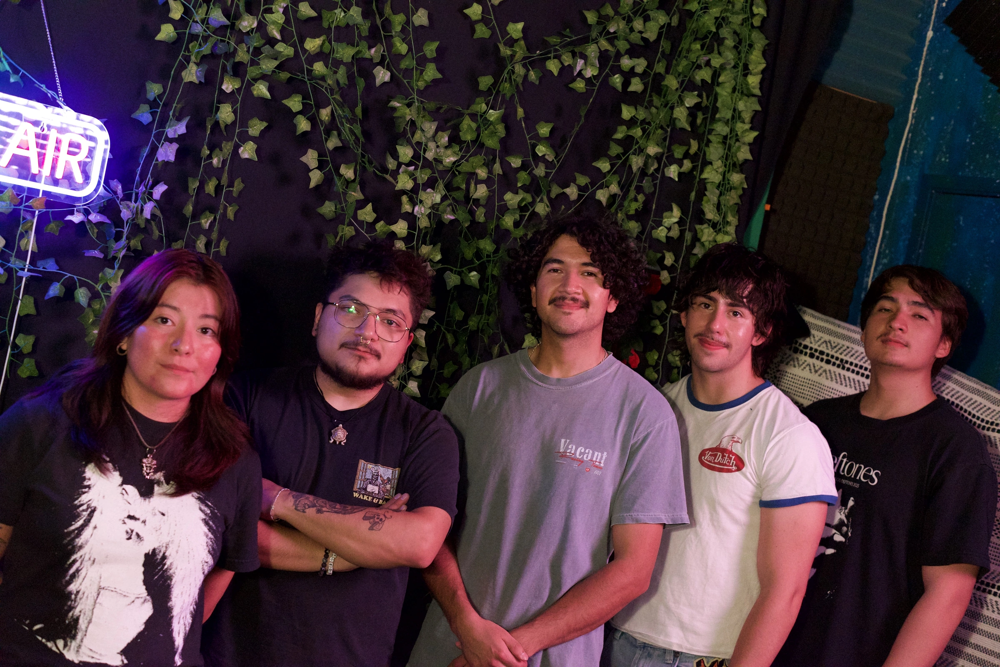
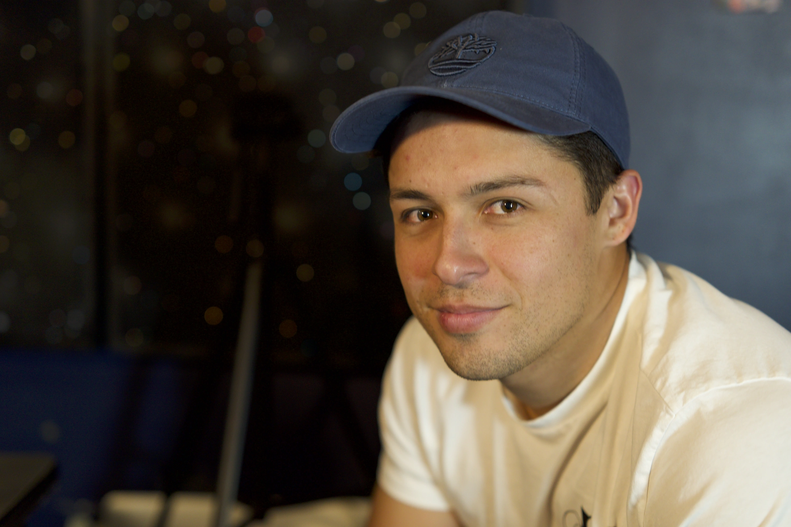

Community
The work
around
the work.
around
the work.
Albuquerque artists + sessions
Checkmark
Tonight




Hosted, recorded, and interviewed at Checkmark Audio
Real artists
Real sessions
NM · ABQ
Albuquerque artists + sessions


Hosted, recorded, and interviewed at Checkmark Audio
Real artists
Real sessions
NM · ABQ